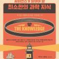

도서관에서 신간이 나왔다고 하길래 한 번 읽어보았다.
내용은 우주공학자/우주생물학자인 루이스 다트넬이 쓴 생물학이 우리 인간 진화와 역사에 미친 영향을 8개의 주제로 나
누어 기술한 것이다.
저자가 말하는 중대한 8가지의 영향은 아래와 같다.
1. 문명을 위한 소프트웨어
※사회적 본능을 의미
2. 가족
3. 감염병
4. 유행병
5. 인구
6. 마음을 변화시키는 물질
7. 코딩오류
※유전적 돌연변이를 의미
8. 인지 편향
저자는 과거의 칼 세이건이나, 파인만 교수가 그랬듯 과학적인 사실을 일반 대중이 쉽게 이해할 수 있게 풀어 쓰는 재능이
있다. 거기에
혼신의 구라로 유명한
사피엔스에서 유발 하라리가 보이는 스토리 텔링 재능까지 있어서 책 자체가 무척 재
미있다. 덕분에 인류 진화와 역사라는 절대 쉬운 주제가 아님에도 불구하고 390페이지 짜리 책을 재미있게 끝까지 읽을
수 있었다.
책의 내용은 위에 이야기한 8가지의 것들이 어떻게 인류 진화와 역사에 영향을 끼쳤는지 설명하는 것이다. 예를 들면 근친
유전으로 인한 혈우병이 어떻게 러시아 혁명에 영향을 주었는지를 설명하는 식이다. 이를테면 혈우병을 가진 러시아 니콜
라스2세의 아들을 돌보다 지쳐 히스테리에 빠진 황후에 사이비 라스푸틴이 접근하고 라스푸틴에 의해 러시아 정치가 작살
나면서 사람들이 빡쳐서 러시아 혁명의 불씨가 되었다... 이런 식이다.
이 책에서 나는 인류의 역사를 깊이 파고들면서 문화와 사회와 문명에서 기본적인 인간성이 어떻게 표출되었는
지 탐구할 것 이다. 우리 유전학과 생화학, 해부학, 생리학, 심리학의 다양한 특성이 어떻게 나타나고, 어떤 결과
와 영향을 미쳤을까(단지 개별적이 고 중요한 사건들뿐만 아니라, 세계사의 중요한 상수와 장기적 추세에)?
이 책에서는 인류의 독특한 특성뿐만 아니라, 다른 동물과 공유한 우리 몸과 행동의 특징도 살펴볼 것이다. 세련
된 문화와 사회의 많은 요소는 우리의 동물적 본성을 가리고 있는 얇은 판자와 같다. 자원과 성관계를 놓고 경쟁
하거나 자식에게 인생에서 좋은 기회를 마련해주려고 노력할 때, 우리는 나머지 동물과 별 차이가 없다. 이러한
원초적 욕구들은 가족 구조에서부터 순수 혈통을 지키려는 왕족의 노력에 이르기까지 역사 속 모든 곳에서 표출
되었다.
이 책에서 우리는 인류학과 사회학의 최신 연구를 바탕으로 일상 생활에서 얼마나 많은 측면이 우리의 생물학에
깊은 뿌리를 두고 있는지 살펴볼 것이다.
책 서문 중
책을 읽다보면 '오 정말?' 이라고 싶을 정도로 설득력 있고 재미있게 제시하는데, 이게 이 책의 흠이라면 흠이다.
아무래도 워낙 넓은 스펙트럼 (먼산...)을 다루기 때문에 각각의 내용이 과도하게 단순화 될 수 밖에 없고 그러다 보니 위에
말한 혈우병 처럼 사람들이 단순히 혈우병때문에 러시아 혁명이 일어났구나... 라고 오판할 수 있는 기회를 제공한다.
당연히 러시아 혁명에 혈우병에 걸린 니콜라이2세 아들인 황태자가 영향을 준 것은 사실이겠지만 혁명이라는 것이 이렇게
단순하게 일어나진 않는다. 여러가지 제도와 사회의 모순과 불만이 쌓여 우연과 공작이 겹쳐 터져나오는 것이 사회 변화인
데 이 책은 이러한 부분에서는 주제를 너무 강조한 나머지 지나치게 단순화를 시키는 오류를 보여주긴 한다.
물론 그렇기 때문에, 쉽고 재미있다.
확실히 대중이 읽기에는 재미있는 책이라고 생각되며 (나도 무척 재미있었다) 이런식으로 생물학과 인류의 역사가 결합될
수 있다는 지적 즐거움을 주는 좋은 책이다. 이것을 사실로 받아들이면 좀 위험하지만, 그래도 우리 인류의 진화와 역사가
이런 주요한 것들에 의해서 영향을 받았다는 것으로 시작해 흥미를 가지고 인류 역사나 생물학을 공부하는 사람들이 있다
면 이 책은 그 역할을 충실히 했다고 할 것이다.
(그 옛날, 어릴 적 TV 에서 코스모스를 보고 천문학자가 된 사람들이 많았었는데, 이 책도 그 맥락에서 장점을 생각해 보면
된다)
이 저자가 '기술' 이라는 컨셉으로 비슷한 책을 예전에 썼다고 하는데 한 번 사서 읽어볼 예정이다.

사피엔스가 알아야 할 최소한의 과학 지식 | 루이스 다트넬 - 교보문고
사피엔스가 알아야 할 최소한의 과학 지식 | 폐허가 된 세상에서 모든 것을 다시 시작해야 한다면 우리는 무엇을 알아야 하
는가? 《오리진》의 저자 루이스 다트넬의 압도적인 베스트셀러 의식주부터 의학, 전력, 운송, 과……
product.kyobobook.co.kr
역사와 과학을 좋아하는 독자라면, 사피엔스나 총균쇠를 즐겁게 읽었던 독자라면 추천할 만한 책이다.
[재미있었던 구절들과 생각]
책에 있었던
인상깊은 구절
과
이에 대한 나의 생각
을 기록해둔다.
잘 협응된 동맹이 계획된 주도적 공격성을 이용해 폭력적인 독재자를 억제하는 이 능력은 성급한 반응성 공격성
을 감소시키는 선택 압력을 만들어냈다. 인간 사회에서는 전성기의 침팬지와 달리 우두머리 자리에 오르려고 경
쟁자에게 폭력을 행사하면 아무것도 얻지 못하는 결과를 맞이하게 되었다. 사실, 폭력적이라는 명성을 얻으면
오히려 나중에 적들의 동맹을 통해 보복을 당할 위험이 커졌다. 반응성 공격성에 대한 집단 처벌은 진화적으로
그것 을 억제하는 결과를 낳았다.
우리는 스스로를 길들였다.
p29
우리 인간이 시비 붙으면 그 자리에서 한 놈 죽을 때 까지 머리통을 깨지 않는 덕분에 지금의 사회가 만들어졌다. 우리가
이성적인 존재이기 때문이라기 보다는, 빡치면 주먹나가는 '반응성 공격성' 보다는 주도해서 죽이는 '주도적 공격성' 을 기
르는 방향으로 진화했기 때문이다. 침팬치와 우리는 공격성의 차이만 있을 뿐이다.
이전에 잠재적 무 기(무거운 돌이나 뾰족한 나뭇가지)를 누구나 손쉽게 구할 수 있는 상 황은 평등주의를 실현하
는 데 도움이 되었다. 하지만 더 우월한 무 기와 갑옷을 만들기가 어렵고, 그 원자재가 희귀하거나 값비싼 상 황
은 독재자의 전횡을 강화하는 효과를 낳았다. 부를 통제하는 지배자만이 힘센 남자들의 충성심을 사고 첨단 무
기 기술로 무장시 킬 여력이 있었다. 독재자를 제거하기 위해 개인들이 즉각 동맹을 결성하기가 훨씬 어려워졌
다. 사실, 국가는 종종 경계 내에서 폭력 사용의 독점권을 행사할 수 있는(통치자가 그 폭력을 언제 어디에 사 용
할지에 관해 절대적 통제력을 행사하는) 일관성 있는 정치 조직체로 정의된다.”
p33
국가란 폭력을 지배하는 집단이라는 통찰력 있는 문장.
그것이 우리 인류 역사의 기본.
이타적 처벌을 촉진하는 주요 동기는 선천적이고 감정적인 것처럼 보인다. 참여자들은 무임승차자에게 분개나
분노를 느끼 며, 그들을 처벌하고 싶은 충동적 욕구가 솟구친다고 보고한다.
정의롭게 사기꾼을 처벌할 때에는
배고픔이나 갈증을 해소하거 나 섹스를 하거나 부모가 자녀에게 보살핌을 제공하는 것과 같은 주요 생물학적 기
능을 수행할 때처럼 뇌의 보상 중추에서 신경 전 달 물질인 도파민이 많이 분비된다
는 사실이 연구를 통해 밝혀
졌다.(도파민 체계에 관해 더 자세한 내용은 6장에서 다룰 것이다.) 남에게 정당한 처벌을 할 때 드는 비용을 기
꺼이 부담하게 만드는 것은 이 도파민 분비에서 생겨나는 즐거움이다.
사람의 경우, 협력과 친사회적 행동을 실행에 옮기는 데에는 그 나름의 본질적인 보상이 따르는 것처럼 보인다.
따라서 생존과 생식을 향한 원초적 충동 위에는 더 최근에 생긴 우리만의 특별한 친사회적 행동이라는 신경학적
강박 충동이 쌓여 있다. 사람은 협력이 기본 상태로 내정된 것처럼 보이며, 이것은 상호 작용에서 페어플레이를
요구한다. 협력은 우리의 유전자에 부호화돼 있으며, 이타적 처벌은 사회를 결속시키는 접착제이다.
p49
우리가 참교육 컨텐츠를 사랑하는 이유.
파리의 커피 하우스들 역시 정치적 토론과 심지어 폭동 선동 의 온상이었고, 1789년의 프랑스 혁명 때 일어난
사건들에 중요한 역할을 했다. 카페 프로코프에는 로베스피에르Roiespene를 비롯해 유명한 혁명가들이 자주
들렀고, 카미유 데물랭Camille Desmoulinso 바스티유를 습격하라고 군중을 선동한 것은 카페 드 포이의 야외
테이블에서였다.
그리고 폭도를 불타오르게 한 것은 알코올이 아니라 카페인이었다.
p254
여러분 카페인이 이렇게 위험한 것입니다!
자연계에는 온갖 패턴이 넘쳐난다.
예를 들면, 특정 나무들에 장과가 열리고, 특정 식물들이 동일한 서식지에서
자라고, 사냥감 이 무리를 지어 돌아다니는 등 수렵채집인 조상들이 가치 있게 여 겼던 자원은 무작위적으로 분
포된 게 아니라 한데 모여 있는 경우 가 많았다.
이러한 자연 환경에서 애타게 찾고 있던 것을 발견한다면, 같은
장소에서 같은 것을 더 많이 발견할 가능성이 높았다.
따라서
일부 인지 편향은 우리 뇌의 잘못된 배선 때문에 생긴것이 아니다. 그것은 자연 환경의 특징에 적용하기
위해 진화가 갈고 닦아 만든 인지 과정의 설계 특성이다.
혹은 그런 행동은 비논리적인 것이 아니라 생태학적인
것이라고 말할 수 있다. 우리의 코딩에서 버그를 만들어내는 것은 무작위성을 강제로 도입한 카지노나 심리학
실험 환경의 인위적 조건이다.
p355-356
요즘 주식좀 투자한다고 인간을 무슨 인지 편향에 빠진 멍청한 원숭이 처럼 생각하는 컨텐츠를 작성하는 어그로 꾼들이 있
는데, 이렇게 말해주고 싶다.
"얼라야, 니가 까는 인지편향 덕에 지금 니가 살아있는거란다"
전망 이론의 중심에는 인간의 손실 회피 경향이 자리잡고 있 는데, 이 이론은 그러한 인지 편향들이 중요한 결과
를(특히 흥정과 협상에서) 빚어낸다는 것을 보여준다. 예컨대 국제 무역 협정의 협상을 살펴보자. 여기에는 쿼터
와 그 밖의 규제 사항, 협정 위반에 대한 처벌뿐만 아니라, 다양한 상품과 제품에 적용될 세금과 관세와 관련된
세부 사항 등에서 합의를 이끌어내기 위한 국가 간 논의가 필요하다. 합의를 이끌어내려면 쌍방이 상대방이 제
시한 조건과 요구에 어느 정도 양보를 해야 한다.
각 나라가 상대방에게 한 양보는 손실에 해당하고, 상대방에게
서 받은 양보는 이득에 해당 한다. 하지만 손실 회피 편향과 우리가 손실과 이득을 평가할 때 느끼는 비대칭성
때문에, 양측 모두 자신의 양보가 상대방의 양보 와 균형이 맞지 않는다고 느낀다
. 그 결과로 양측은 자신이 하
려는 양보보다 상대방이 더 많은 양보를 하길 기대하는데, 이러한 인지 편향 때문에 협상이 성공적인 결론에 이
르기 어려울 때가 많다.
p377-378
앞으로 협상에서 이 인지편향을 잘 이용해서 성공적으로 협상을 이끌어 보아야 겠다.
끝.